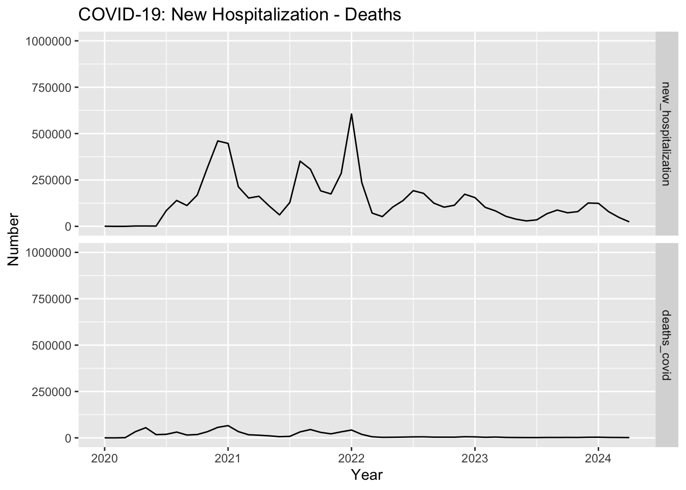
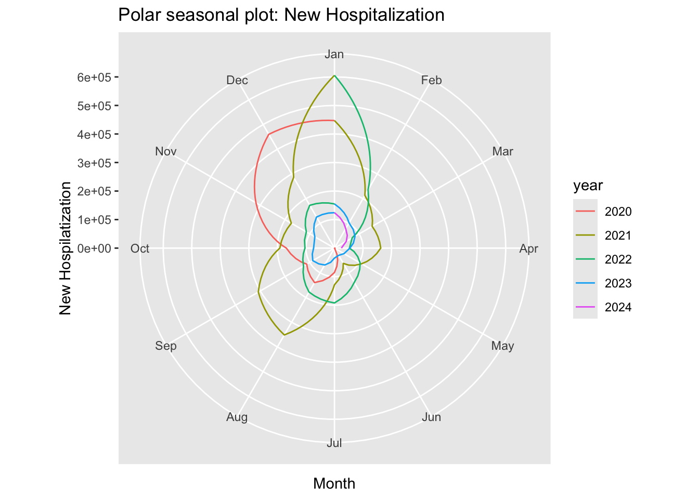
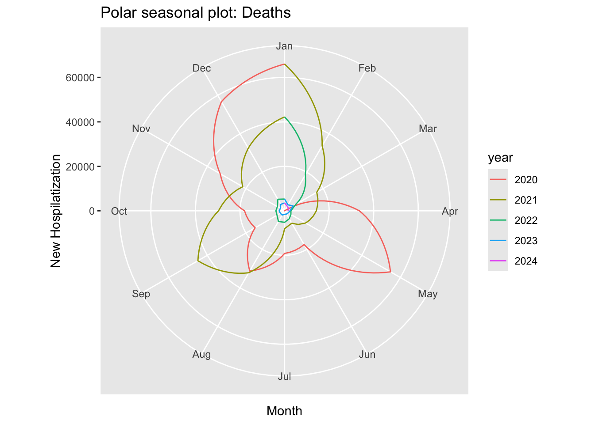
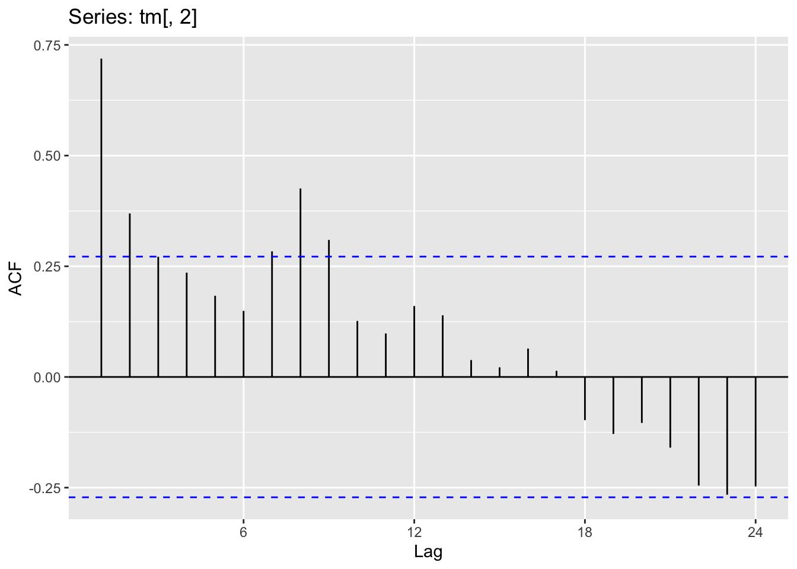
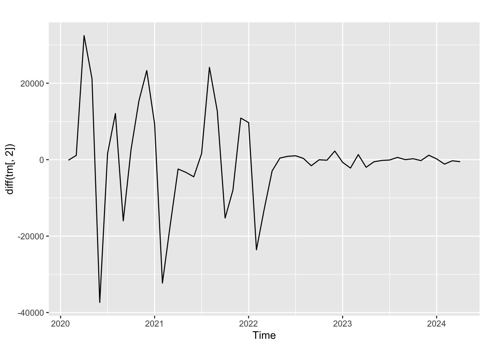
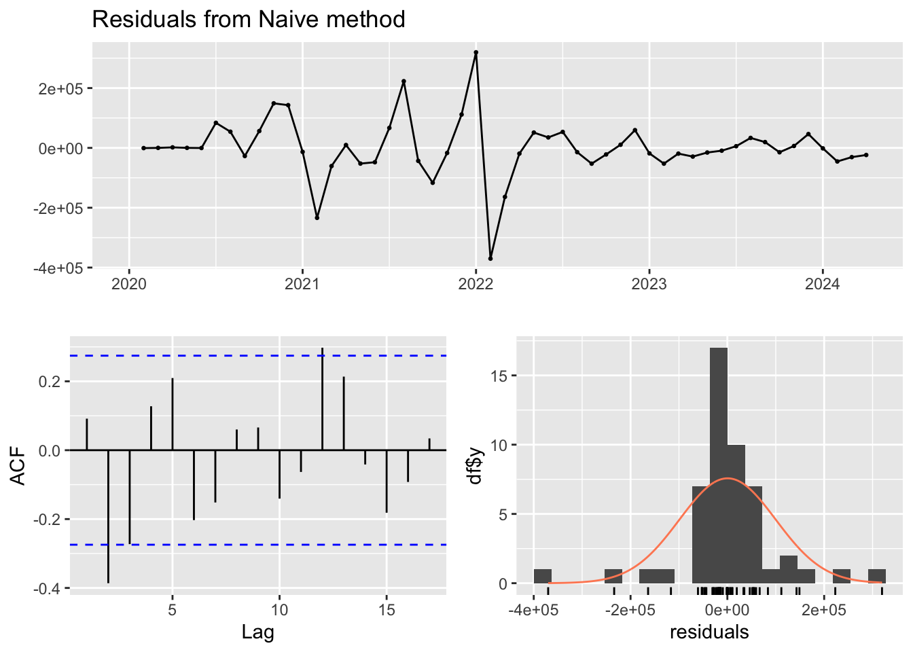
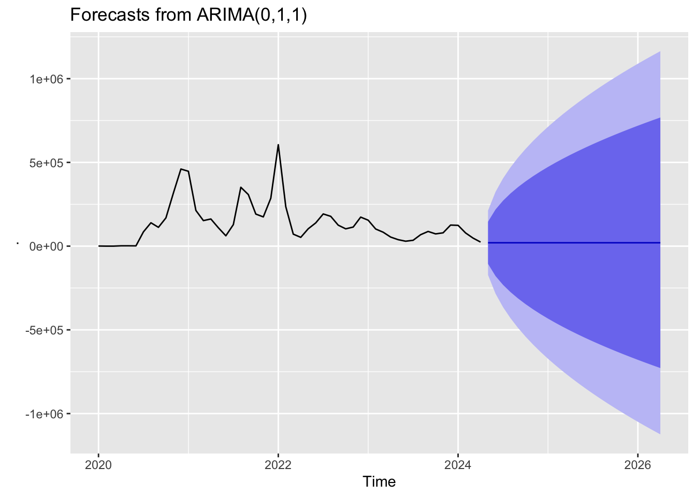

pacman::p_load(httr, # request url using GET() function
jsonlite, # convert JSON file to a data frame in R
forecast, # fit sin and cosin terms to data
trending, # fit and assess models
feasts, # for time series decomposition and autocorrelation
janitor, # summary table
tidyverse # data management and visualization
)COVID-19 Forecast: US Hospitalizations data
R
API
Forecast
ARIMA model
Time series
Hospitalization
COVID-19
A overview of forecasting methods using US COVID-19 Hospitalization data throught API.
Request data using API in R
APIs allow programmers to request data directly from Server API or website through an Application Programming Interface. The first step is making a request to access the data in a certain website, the API server (own of data) will send back a response. There are several types of requests that one can make to an API server GET, POST, PUT. Four our purpose we’ll be asking for data using GET requests.
To create a GET request we need to use the GET() function from the httr library.
Let’s create an object called path that will be the JSON link. For particularly large datasets, you probably will not be able to grab all rows with a single API call. An alternative is to request the data in batches by using the$limitand $offset parameters. Users can request data beginning at a row other than the first row by specifying the ?$offset=_" parameter at the end of the URL. For example, for the COVID-19 Reported Patient Impact and Hospital Capacity by State Time Series dataset, "https://healthdata.gov/resource/g62h-syeh.json?$limit=50000" will bring in the first 50000 rows", "https://healthdata.gov/resource/g62h-syeh.json?$limit=50000&\$offset=50000" will bring in the next 50000 rows.
# url for first 50000 rows
path <- "https://healthdata.gov/resource/g62h-syeh.json?$limit=50000"
# url for first 50000 rows
path_2nd <- "https://healthdata.gov/resource/g62h-syeh.json?$limit=50000&$offset=50000"Now let’s make the request using GET() function
request <- GET(url = path)
request_2nd <- GET(url = path_2nd)Examining the GET() output
# see the URL content
requestResponse [https://healthdata.gov/resource/g62h-syeh.json?$limit=50000]
Date: 2024-07-26 11:06
Status: 200
Content-Type: application/json;charset=utf-8
Size: 332 MB
[{"state":"MA","date":"2021-06-15T00:00:00.000","critical_staffing_shortage_t...
,{"state":"WY","date":"2021-06-13T00:00:00.000","critical_staffing_shortage_t...
,{"state":"LA","date":"2021-06-06T00:00:00.000","critical_staffing_shortage_t...
,{"state":"RI","date":"2021-06-04T00:00:00.000","critical_staffing_shortage_t...
,{"state":"KS","date":"2021-06-03T00:00:00.000","critical_staffing_shortage_t...
,{"state":"ME","date":"2021-06-03T00:00:00.000","critical_staffing_shortage_t...
,{"state":"RI","date":"2021-06-02T00:00:00.000","critical_staffing_shortage_t...
,{"state":"ME","date":"2021-05-30T00:00:00.000","critical_staffing_shortage_t...
,{"state":"RI","date":"2021-05-30T00:00:00.000","critical_staffing_shortage_t...
,{"state":"MS","date":"2021-05-28T00:00:00.000","critical_staffing_shortage_t...
...The output shows: Date: 2024-07-02 22:49 when the request was made Status: 200 refers to the success or failure of the API request, if the number is 200 the request was successful. Content-Type: application/json the response says that the data takes on json format Size: 332 MB the size of the json file
Converting JSON file to a data frame
JSON is formatted as a series of key-value pairs, where particular word (“key”) is associated a particular value. to do this first let install jsonlite package that contain fromJSON() function that convert JSON file into list. The fromJSON() needs a character vector that contain the JSON structure.
# Convert the raw Unicode into a character vector that resembles the JSON format
convert_JSON_to_df <- base::rawToChar(request$content)
# Get the data we want in a format that we can more easily manipulate in R
hospitalization_covid_usa <- fromJSON(convert_JSON_to_df, flatten = TRUE)
######### convert the second file
# Convert the raw Unicode into a character vector that resembles the JSON forma
convert_JSON_to_df_2nd <- base::rawToChar(request_2nd$content)
# Get the data we want in a format that we can more easily manipulate in R
hospitalization_covid_usa_2nd <- fromJSON(convert_JSON_to_df_2nd, flatten = TRUE)Let’s join the 2 tables using the rbind() function and clean the data. First I will clean the names of columns using the clean_names() function that standardizes the syntax of column names, and select interested variables. Use the skim() function for the summary table. I will select only 4 variables, state, date, previous_day_admission_adult_covid_confirmed and previous_day_admission_pediatric_covid_confirmed, the indicators are aligned to WHO impatient care definition case, then will sum give Hospitalization cases.
# join data frame using rbind
hosp_clean <-rbind(hospitalization_covid_usa, hospitalization_covid_usa_2nd) %>%
clean_names() %>%
replace(is.na(.), 0) %>%
# calculate new hospitalization and deaths column
mutate(previous_day_admission_adult_covid_confirmed = as.numeric(previous_day_admission_adult_covid_confirmed),
previous_day_admission_pediatric_covid_confirmed = as.numeric(previous_day_admission_pediatric_covid_confirmed),
new_hospitalization = previous_day_admission_adult_covid_confirmed + previous_day_admission_pediatric_covid_confirmed,
deaths_covid = as.numeric(deaths_covid),
date = as.Date(date)) %>%
# Select state, date and new_hospitalization variable
select(state, date, new_hospitalization, deaths_covid) %>%
# create new variable
mutate(country = "UNITED STATES OF AMERICA",
ISO_3_CODE = "USA")tm_clean <- hosp_clean%>%
mutate(yearmonth = zoo::as.yearmon(date)) %>%
group_by(yearmonth) %>%
summarise(new_hospitalization = sum(new_hospitalization, na.rm = TRUE),
deaths_covid = sum(deaths_covid, na.rm = TRUE))Time Series Forecasting
Is about predicting the future events or values using historical and present data points. Times Series: is anything that is observers sequentially over time, data points are gathered over time.
Predictor variables are often useful in time series forecasting. We have COVID-19 patient admission data in USA from 2020-01-01 to 2024-04-27. In the next task we will continue of observations into the future using forecasting methods such as trend, seasonality and cyclic.
The basic step in a forecasting task is: - Problem definition: This requires an understanding of the way the forecasts will be used, who required the forecaster, and how the forecasting function fits within the requiring the forecasts - Gathering information: There are information required: statistical data and the accumulated expertise of people who collect the data and use the forecasts. - Preliminary (exploratory) analysis: Always start by graphing the data. Are there consistent patterns ? Is there a significant trend? Is seasonality important? various tools have been developed to help with this analysis. - Choosing and fitting models: The best model depends on the availability of historical data. - Using and evaluating a forecasting model: Once the model has been selected and its paremeters estimated, themodel is used to make forecasts.
Time series objects in R
A time series can be throught of as vector or list of numbers. We store in a ts object, using ts() function
tm<- ts(
tm_clean[, 2:3], # Just take the sequence of values into column
start = c(2020,1), # indicate the time of the first observation, c(year, period)
frequency = 12) # is set to 12 because data are montlhyTime series plots “Trend”
This graphs ebable to visualize many features of data, including patterns, unusual observations, changes over time.
# message: false
max(hosp_clean$new_hospitalization)[1] 2580ggplot2::autoplot(tm, facets = TRUE) +
ggtitle("COVID-19: New Hospitalization - Deaths")+
xlab("Year")+
ylab("Number")+
ylim(0,1000000)
These time series, we have plotted, words such as “trend” and “seasonal” which need to be defined more carefully. -Trend: Exists when there is a long-term increase or decrease in the data. It does not have to be linear. -Seasonal:A seasonal pattern occurs when a time series is affected by seasonal factors such as the time of the year or the day of the week. Seasonality is always of a fixed and known frequency. -Cyclic: A cycle occurs when the data exhibit rises and falls that are not of a fixed frequency. These fluctuations are usually due to economic conditions, and are often related to the “business cycle”. The duration of these fluctuations is usually at least 2 years.
We will use two more function which.max() and frequency() that can be used to identify the smallest index of the maximun value
which.max(tm[,2])[1] 13frequency(tm[,2])[1] 12Polar Seasonal plot
Is similar to a time plot except that the data are plotted against the individual “seasons” in which data were observed. will create using ggseasonplot() function
# polar seasonal plot for hospitalization
ggseasonplot(tm[,1], polar = TRUE) +
ylab("New Hospilatization")+
ggtitle("Polar seasonal plot: New Hospitalization")
# polar seasonal plot for deaths
ggseasonplot(tm[,2], polar = TRUE) +
ylab("New Hospilatization")+
ggtitle("Polar seasonal plot: Deaths")

Autocorrelation of non-seasonal time series
Another way to look at time series data is to plot each observation against another observation that occurred some time previously by using gglagplot(). For example, you could plot Yt against Yt−1. This is called a lag plot because you are plotting the time series against lags of itself.
The correlations associated with the lag plots form what is called the autocorrelation function (ACF). The ggAcf() function produces ACF plots.
# ACF plot of hospitalization data
ggAcf(tm[,2])
###White noise
- iid, or random, independent, individually distributed observations
###Ljung-Box Test
The Llung-Box test considers the first h autocorrelation values together
A significant test (small p-value) indicates the data are probably not white noise.
###White noise summary
- white noise is a time series that is purely random
- we can test for white noise by looking at an ACF plot or by doing a Ljung-Box test
Box.test(tm[,1], lag = 24, fitdf = 0, type = "Ljung")
Box-Ljung test
data: tm[, 1]
X-squared = 77.144, df = 24, p-value = 1.723e-07Difference series
Code
autoplot(diff(tm[,2])) 
summary(forecast::naive(tm[,1], h = 20))
Forecast method: Naive method
Model Information:
Call: forecast::naive(y = tm[, 1], h = 20)
Residual sd: 98496.2732
Error measures:
ME RMSE MAE MPE MAPE MASE ACF1
Training set 463.0588 98496.27 59888.31 -Inf Inf 0.5476191 0.09158876
Forecasts:
Point Forecast Lo 80 Hi 80 Lo 95 Hi 95
May 2024 24276 -101952.1 150504.1 -168773.1 217325.1
Jun 2024 24276 -154237.4 202789.4 -248736.7 297288.7
Jul 2024 24276 -194357.4 242909.4 -310094.9 358646.9
Aug 2024 24276 -228180.1 276732.1 -361822.3 410374.3
Sep 2024 24276 -257978.5 306530.5 -407395.0 455947.0
Oct 2024 24276 -284918.3 333470.3 -448595.9 497147.9
Nov 2024 24276 -309692.0 358244.0 -486484.0 535036.0
Dec 2024 24276 -332750.8 381302.8 -521749.4 570301.4
Jan 2025 24276 -354408.2 402960.2 -554871.4 603423.4
Feb 2025 24276 -374892.2 423444.2 -586199.0 634751.0
Mar 2025 24276 -394375.1 442927.1 -615995.6 664547.6
Apr 2025 24276 -412990.8 461542.8 -644465.9 693017.9
May 2025 24276 -430845.7 479397.7 -671772.6 720324.6
Jun 2025 24276 -448026.1 496578.1 -698047.8 746599.8
Jul 2025 24276 -464603.1 513155.1 -723400.1 771952.1
Aug 2025 24276 -480636.2 529188.2 -747920.6 796472.6
Sep 2025 24276 -496175.6 544727.6 -771686.0 820238.0
Oct 2025 24276 -511264.3 559816.3 -794762.2 843314.2
Nov 2025 24276 -525939.3 574491.3 -817205.7 865757.7
Dec 2025 24276 -540233.0 588785.0 -839066.0 887618.0Checking time series residuals
When applying a forecasting method, it is important to always check that the residual are well-behaved and resemble white noise.
tm[,1] %>% naive() %>% checkresiduals()
Ljung-Box test
data: Residuals from Naive method
Q* = 22.085, df = 10, p-value = 0.01468
Model df: 0. Total lags used: 10Forecasting with ARIMA models
ARIMA models aim to describe the autocorrelations in the data, use the Arima() function in R. There is another function arima() in T which also fits an ARIMA model.
tm[,1] %>%
Arima(order = c (0,1,1), include.constant = FALSE) %>%
forecast() %>%
autoplot()
No matching items